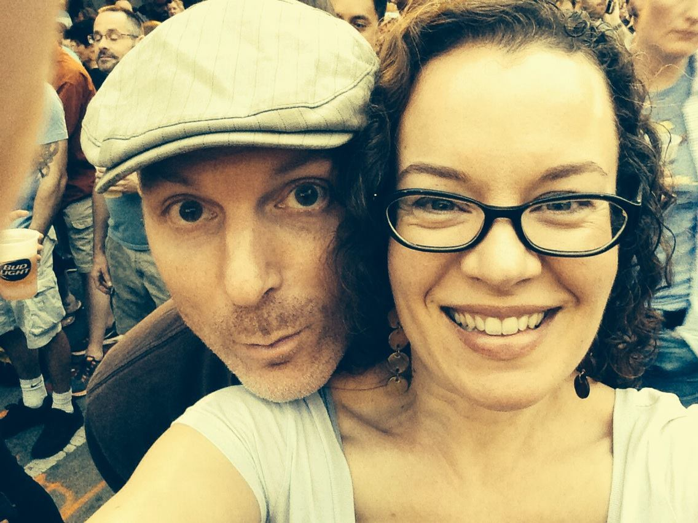

About Me
Hi! I’m Rebecca. I currently work at WTTW, where I’m the digital editor for Chicago Tonight, a news and public affairs TV show and website. We cover local politics, education, culture, business, science and other topics. Before joining WTTW, I was a senior digital news editor at Chicago Tribune. You can find out more about my work history by visiting my LinkedIn profile.
This site is my first foray into web development, and I’m really excited to put my skills to the test. I’ve been writing very basic code for years and have always wanted to learn more. It’s not easy being a student again – especially with a demanding full-time job – but I love it.
When I’m not sitting with computers, I love reading books and magazines. Most recently, I read Katherine Boo’s “Behind the Beautiful Forevers: Life, Death, and Hope in a Mumbai Undercity.” I’m haunted by the sights and sounds of this unrelated video of Annawadi, the makeshift settlement featured in the book.
(My cat, Mix, is also a fan of my reading habits, provided there’s space for him to nap.)
Thanks for checking out my profile. I look forward to building more websites – and sharing some cat photos, too.